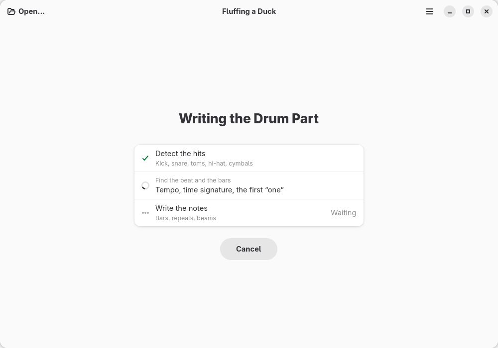
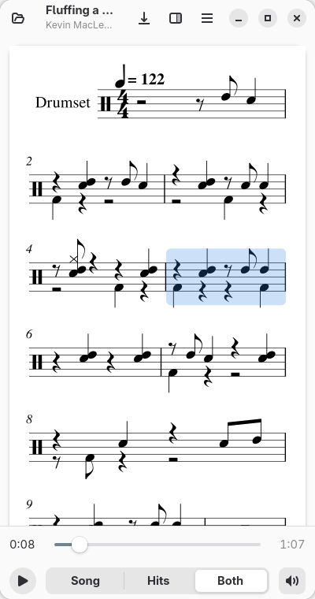

For drummers · Mac and Linux · Free
Drop a song, get the drum sheet music.
Stickler listens to a song and writes down what the drummer plays: kick, snare, toms, hi-hat and cymbals. Read it on screen, play along, or print it.
- On your computerNo account, no upload
- About 15 secondsfor a 4-minute song on a laptop
- Free and open sourceGPL licence
- In three languagesEnglish, Deutsch, Español
How it works
Four steps, nothing to set up.
- 1
Open a song
Drop an MP3, FLAC or WAV on the window, or choose one. - 2
Wait a moment
It finds the hits, then the beat and the bars. About 15 seconds. - 3
Read and play along
The sheet music follows the song, bar by bar. - 4
Keep it
Save it as PDF to print, or as MusicXML for MuseScore.
Hear it, read it
The first 20 seconds of “Fluffing a Duck”, and what Stickler wrote down for its drums.
“Fluffing a Duck” by Kevin MacLeod (incompetech.com), licensed under CC BY 4.0; shortened to its first 20 seconds.

How good is it?
Good enough to learn a song from, not perfect. Measured on 25 rock, metal and pop songs against sheet music written by people.
Where it is strong
Steady grooves: kick, snare and hi-hat, the tempo and the bars.Where it slips
Fast fills and quiet ghost notes. A wrong tempo or first beat is fixed in the app with one click.What it needs
On its first start Stickler asks to download two models, once. After that it works without the internet.
The models
- ADTOF hears the hits · free for non-commercial use
- 1.3 GB
- Beat This! finds the beat and the bars · MIT licence
- 0.9 GB
- Demucs only to save the drum track · MIT licence
- 1.2 GB
Your computer
- Mac
- Apple silicon, macOS 26
- Linux
- a 64-bit PC (x86_64)
- Memory
- about 1 GB while a song is analysed
- Time
- about 15 s for a 4-minute song on a laptop
- Disk
- about 2.2 GB for the models, 1.2 GB more for the drum track
A look around
Swipe or scroll sideways for more.
-

Drop a song on the window, or open one. -

Each step shows how far it is. -
The sheet follows the song, bar by bar. -

Fix the tempo or the first beat, or make it easier to read. -

It fits a narrow window, too.


Your songs never leave your computer.
Stickler has no account, no cloud and no statistics. It goes online once, to download its models, and asks before it does. This page sets no cookies either. The privacy statement
Get Stickler
Free. Pick your computer.
Mac
.dmgThe first time, macOS stops Stickler because it is not from the App Store. Allow it once:
- Open Stickler and choose Done.
- Open System Settings › Privacy & Security.
- Next to “Stickler was blocked”, choose Open Anyway.
Linux · Flatpak
33 MBOr in a terminal, in the folder you downloaded it to:
flatpak install --user Stickler-7.flatpak
Linux · AppImage
134 MBRight-click it, choose Properties, turn on “Executable as Program”, then open it.
Uninstalling
To free the models’ space but keep the app, choose Remove Downloaded Models… in its menu. To remove everything:
- Mac
- Choose Remove Downloaded Models… with its box ticked, then drag Stickler to the Bin.
- Flatpak
- In a terminal:
flatpak uninstall --delete-data ng.tshia.Stickler - AppImage
- Delete the file, then in a terminal:
rm -r ~/.local/share/stickler ~/.cache/stickler ~/.config/stickler
About the author

Niklas Tshiang Tshiananga: drummer, nerd, author. Do you know how hard it is to find sheet music for even slightly niche music? I do, because I searched. Also, I hate subscriptions. Ta-da: with some time and a lot of tokens, this little program came to be. The code is open on GitHub.